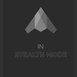

Aditya Sannabhadti
AI / Machine Learning Engineer for clinical and financial data.
Spring, TX. Willing to relocate.
I build and evaluate AI systems for clinical and financial data. Recently: a 4.2B clinical model that beat MedGemma-1.5-4B-it on all six benchmarks, an agentic retrieval prototype cut from ~8 seconds to 2, and an evaluation pipeline with zero run-to-run skew.
Credit-bureau reporting cut from 3 days to 2 hours at Tata Capital and a fraud-identification model at 0.86 F1 at Jocata, backed by production RAG and LLM evaluation.
I build and evaluate AI for clinical settings: a 4.2B clinical model that beat MedGemma-1.5-4B-it on all six benchmarks, physician-rated RAG accuracy up 25% in EMMA, and a pricing agent that lifted CPT/HCPCS code selection from 82% to 91%.
Optimization is the craft: measure, fix, ship - models, code, pipelines, infrastructure.
Eight projects, each with its number.
Choose a role track above and the projects reorder. Pick any project to see its numbers.
A small clinical reasoning model that beats MedGemma on every clinical benchmark I tested. I continued pretraining Qwen3.5 on medical text, then fine-tuned it with DoRA on a mix of clinical reasoning data, and published it on Hugging Face. A later stage trained it with reinforcement learning on rule-based rewards (GRPO), which cut its reasoning about sevenfold at the same MedQA accuracy.
- Qwen3.5-4B-Base
- DoRA r=64
- ~276M tokens
- vLLM
66.20 vs 45.60PubMedQA, Med-Qwen vs Qwen3.5-4B-Base
Wins out of 6 benchmarksMedGemma-1.5-4B-it6/6Gemma-4-E4B-it5/6its base, Qwen3.5-4B-Base3/6I rebuilt the retrieval behind a clinical education podcast platform so residents get more accurate, more complete answers, using Gemini and pgvector on GCP. Physicians rated the answers, and students surveyed the app.
- GCP
- Gemini
- pgvector
- physician surveys
+25%physician-rated accuracy + completeness
A research assistant that pulls from six scholarly sources. I benchmarked open models against Claude on Deep Research Bench and showed that abstract-only retrieval is what limits it.
- PyTorch
- Mistral-7B
- BART
- Deep Research Bench
0.0668 vs 0.4201RACE: Mistral-7B vs Claude Sonnet 3.7
At CMU I built an evaluation pipeline that turns thousands of full-text papers into schema-bound records. Two extractor models, a DeepSeek judge and a human verifier keep the results consistent from run to run.
- Gemma3-12B
- Gemma4-26B-A4B
- DeepSeek-R1
- temperature 0
17,167schema-bound records, zero run-to-run skew
A patient-facing agent that turns a plain-language question into the right billing code. MedGemma works out the intent and deterministic SQL does the pricing across hospital price files, so the answer is reproducible.
- MedGemma
- SQL
- multi-hospital MRFs
82% → 91%CPT/HCPCS selection over 465 synthetic queries
At Value Global I built an agentic proof of concept for chemical safety data sheets, combining vector search with graph traversal. I also built governed MCP tool access to Oracle ERP.
- Qdrant
- Neo4j
- AWS Bedrock
- MCP
~8s → 2sover ~1,000 safety data sheets; PII removed in 97/100 documents
I moved legacy SAS credit-bureau reporting onto Databricks PySpark with automated tests, turning a multi-day manual prep into a short automated run.
- SAS
- Databricks PySpark
- automated tests
3 days → 2 hourscredit-bureau submission prep
An NLP pipeline that flags fraud in text messages and cost data, using XGBoost and SpaCy entity recognition, served through REST APIs.
- XGBoost
- SpaCy NER
- REST APIs
0.86fraud identification F1
Roles, as written.
Value Global LLCJul 2026 - PresentAI Engineering Intern, Tomball, TX
- Cut retrieval time from ~8 seconds to 2 seconds by architecting an agentic proof of concept over ~1,000 chemical safety data sheets with Qdrant vector search, Neo4j relationship traversal, AWS Bedrock, and custom telemetry and evals.
- Delivered deterministic tool access to Oracle E-Business Suite (ERP) accounts payable, receivable, projects, and general ledger modules by building governed MCP agent orchestration, validated over 30-40 queries and 3-4 users.
- Achieved complete PII removal in 97 of 100 documents across transcripts, PDFs, and Excel files by routing preprocessing through a Bash-script skill call, with a statistical test at alpha = 0.05 on reporting accuracy.
Carnegie Mellon University, NIST-AIMSECApr 2025 - May 2026Research Assistant, Pittsburgh, PA
- Generated 17,167 schema-bound evaluation records from 15,944 full-text papers against a 28,023-paper inclusion list by pairing Gemma3-12B and Gemma4-26B-A4B extractors.
- Achieved zero run-to-run skew over 10 repeats of a 100-PMID sample, arbitrated by DeepSeek-R1 as judge and scored by a human verifier at temperature 0.
- Delivered the Perplexity and Claude experiments, evaluations, figures, and manuscript work for a medical knowledge imputation paper (arXiv:2503.22954) by proposing the Sorensen-Dice coefficient.
- Raised CPT/HCPCS code selection from 82% to 91% across 465 synthetic queries by architecting a patient-facing pricing agent with MedGemma intent extraction and deterministic SQL pricing over multi-hospital MRFs.

Stealth StartupJun 2025 - Sep 2025Co-Founder & AI Engineer
- Enabled declarative definition of hardware and deeptech test suites by designing the TOML and YAML file structures and prototyping the unit-testing layer of an agentic test and evaluation suite.
- Advanced to a first-round funding interview with UC Berkeley SkyDeck by co-founding the company and pitching the test and evaluation suite.
Tata Capital Pvt. Ltd.Feb 2024 - Jun 2024Business Analyst Intern, Mumbai, India
- Cut the team's 3-day credit-bureau submission prep to a 2-hour automated run by migrating legacy SAS reporting to Databricks PySpark with automated tests, generating the submission template used for customer scoring.
Jocata Financial AdvisoryAug 2023 - Nov 2023Data Scientist Intern, Hyderabad, India
- Automated fraud identification at 0.86 F1 by building and evaluating an end-to-end NLP pipeline (XGBoost, SpaCy NER) over text messages and costs, served through REST APIs.
Where Med-Qwen wins and loses.
Pick a model to compare it with. Same six benchmarks, same zero-shot setup.
Med-Qwen beats MedGemma-1.5-4B-it on six of six benchmarks and Gemma-4-E4B-it on five of six. It trails its own base model on three.
| Benchmark | Med-Qwen | Qwen3.5-4B-Base | MedGemma-1.5-4B-it | Gemma-4-E4B-it |
|---|---|---|---|---|
| PubMedQA | 66.20 | 45.60 | 52.80 | 54.40 |
| MedQA USMLE (4-option) | 67.95 | 68.34 | 32.60 | 40.14 |
| GPQA Diamond | 50.51 | 36.87 | 36.36 | 57.58 |
| MedMCQA | 33.20 | 26.50 | 30.60 | 33.00 |
| MMLU Med Aggregate | 80.72 | 82.88 | 50.59 | 31.65 |
| AfriMed-QA | 64.80 | 67.00 | 38.20 | 27.00 |
PubMedQA, MedQA (USMLE 4-option), GPQA Diamond, MedMCQA, MMLU Med aggregate and AfriMed-QA. Zero-shot, greedy inference with normalized choice log-probabilities. Source: model card of the Med-Qwen-3.5-4B-Instruct release. The latest model, trained further with RLVR, is Med-Qwen-3.5-4B-it.
Skills, counted rather than claimed.
Each bar is the number of resume bullets that mention the area, computed from the text and not self-rated.
- Qwen
- Google Cloud
- Gemini / Gemma
- PyTorch
- PostgreSQL
- Neo4j
- Qdrant
- Databricks
- PySpark
- Oracle
- spaCy
- Claude
- Mistral
- DeepSeek
- AWS Bedrock
- vLLM
- Retrieval & RAG3 bullets across EMMA, PLP, Value Global
- Fine-tuning & training1 bullet across Med-Qwen
- Evaluation & benchmarks11 bullets across Med-Qwen, EMMA, PLP, NIST eval, Pricing, Value Global, Tata, Jocata, Stealth
- Agents & tool use4 bullets across Pricing, Value Global, Stealth
- Data engineering5 bullets across PLP, Pricing, Value Global, Tata, Jocata
- Classical ML & NLP1 bullet across Jocata
Papers
- Can LLMs Support Medical Knowledge Imputation?arXiv:2503.22954, 2025
- Multispectral & Thermal Data Acquisition System for Plant PhenotypingIEEE CONECCT 2022
- System Architecture and Software Design of a Handheld High Throughput Phenotyping Device: AgRECAIEEE APSCON 2023
Education
- Master of Information Systems ManagementCarnegie Mellon University, Pittsburgh, PA, Aug 2024 - Dec 2025
- B.Tech, Electronics and Computer EngineeringREVA University, Bengaluru, India, Oct 2020 - May 2024
Recognition
- Poster, AMIA 2025 KDDM WorkshopNov 2025, Atlanta
- Officer, CMU Recreational Badminton Club60+ attendees per weekly session, Fall 2025
- 11-785 Introduction to Deep Learning, CNN face-verification trainingKaggle competition, Spring 2025
- Top 10 Teams, CMU Hack-a-StartupLawn-E, a weed-extraction and automated mowing robot, Fall 2024
- Best Software Engineer Project, REVA University Capstone1 of 70 ECE cohort projects, 2024
Let’s talk.
I am based in Spring, TX and willing to relocate. Tell me about the role or the project and I will reply.
asannabh@alumni.cmu.edu Book a chat